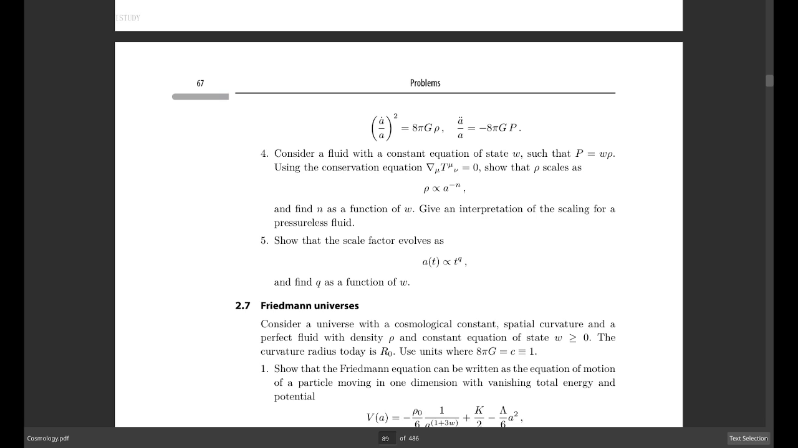
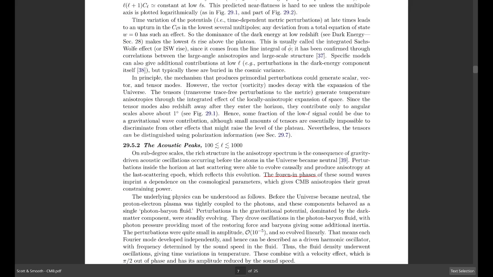
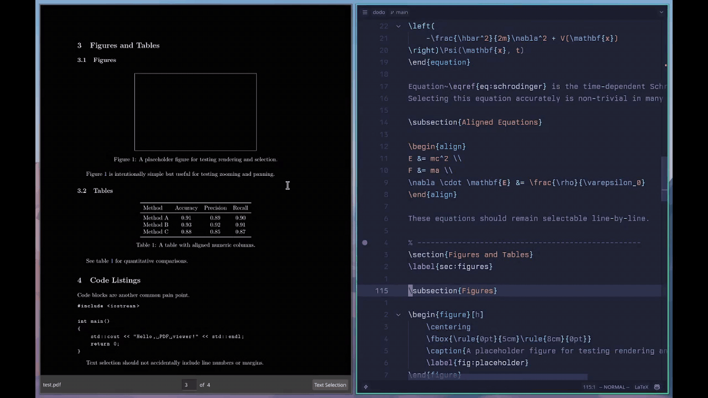
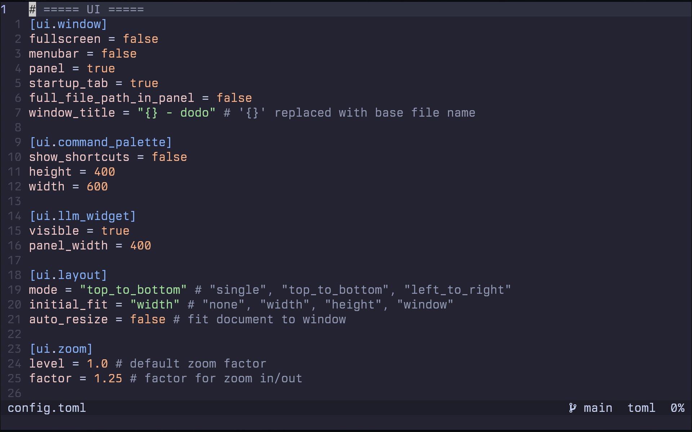

Performance
Smooth, high-performance scrolling with keyboard and mouse support.

Layouts
Choose between top to bottom, left to right or single layouts.

Search
Instantly search through the document with highlighted results and a scrollbar overview.

Jump Marker & History Navigation
Track jump destinations and move back and forth through your reading history.

SyncTeX Support
Jump seamlessly between LaTeX source and the corresponding PDF location.

Annotation Support
Highlight, rectangle and popup annotations supported.
(Only highlight shown here)

Link Hints
Navigate links quickly using the keyboard with hint overlays.

Searchable Text Highlight
Highlighted text remains searchable across the document.

Configured Using TOML
Fully customizable through a clean, readable TOML configuration file.
Other Features
- Tabs support
- Lazy loading
- Session management
- Customizable keybindings
- Automatic non-PDF URL detection